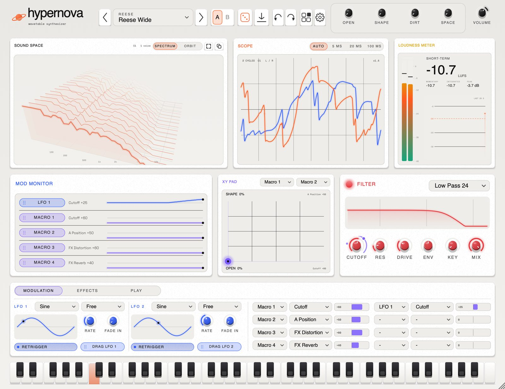
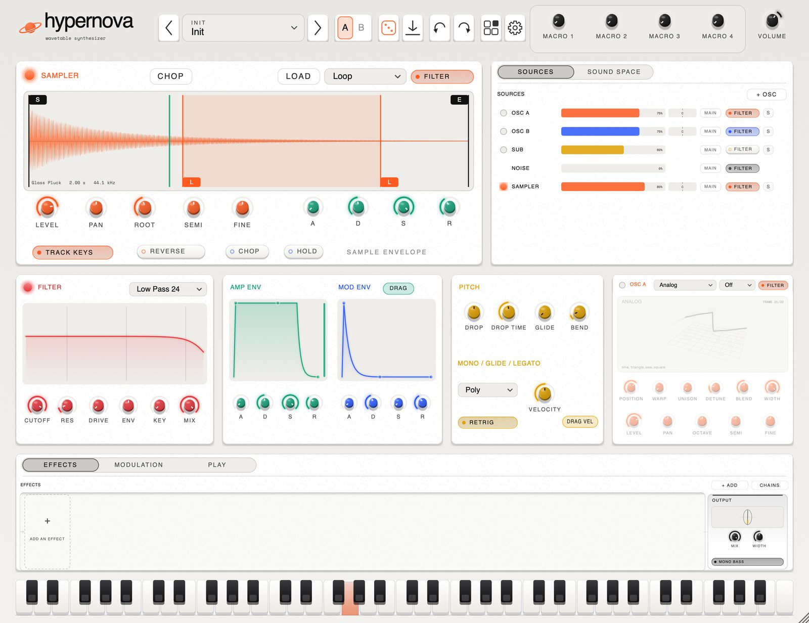
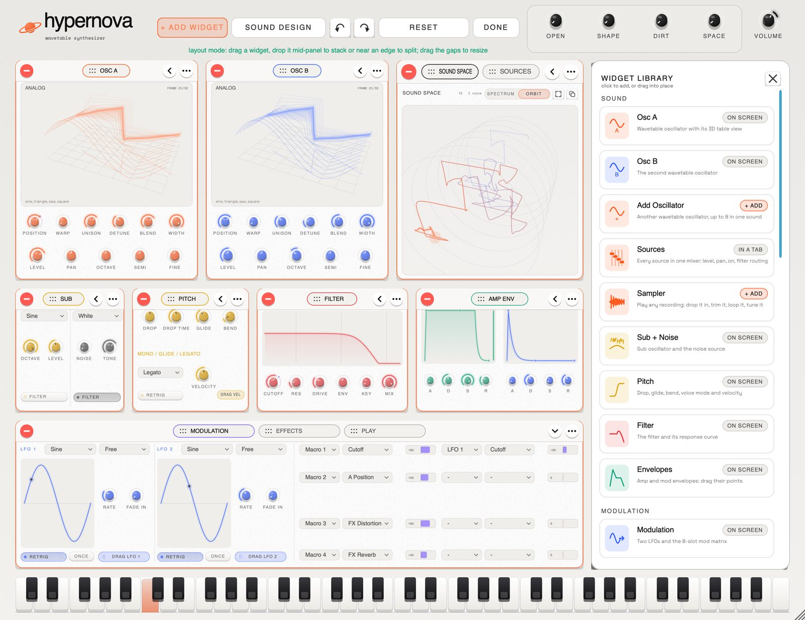
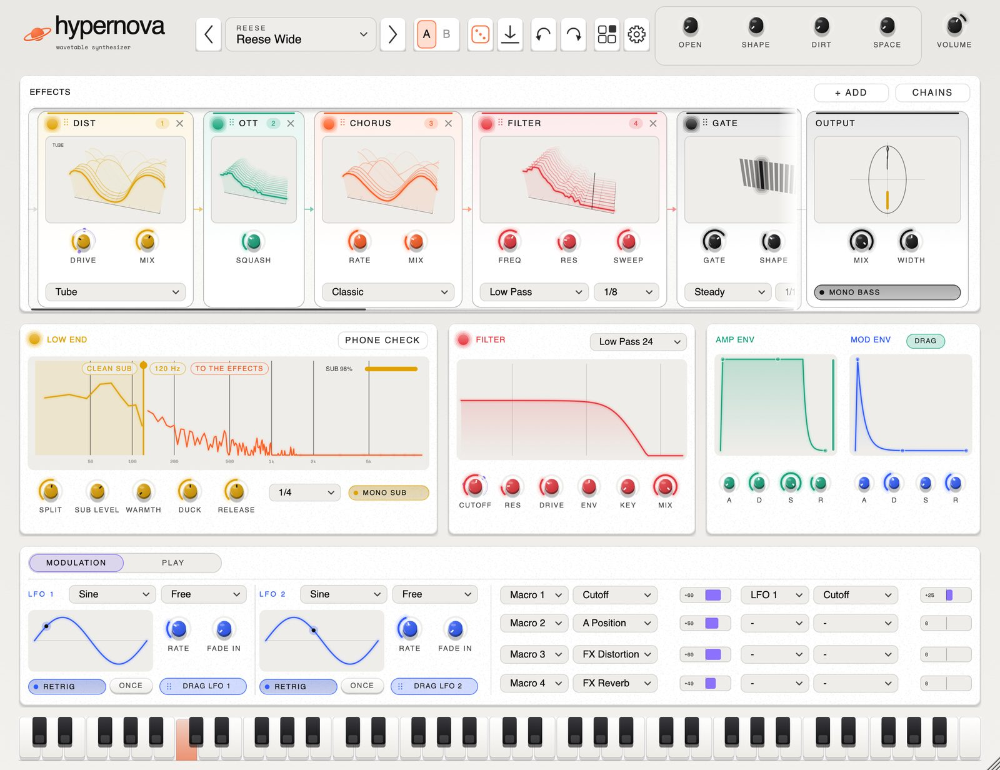
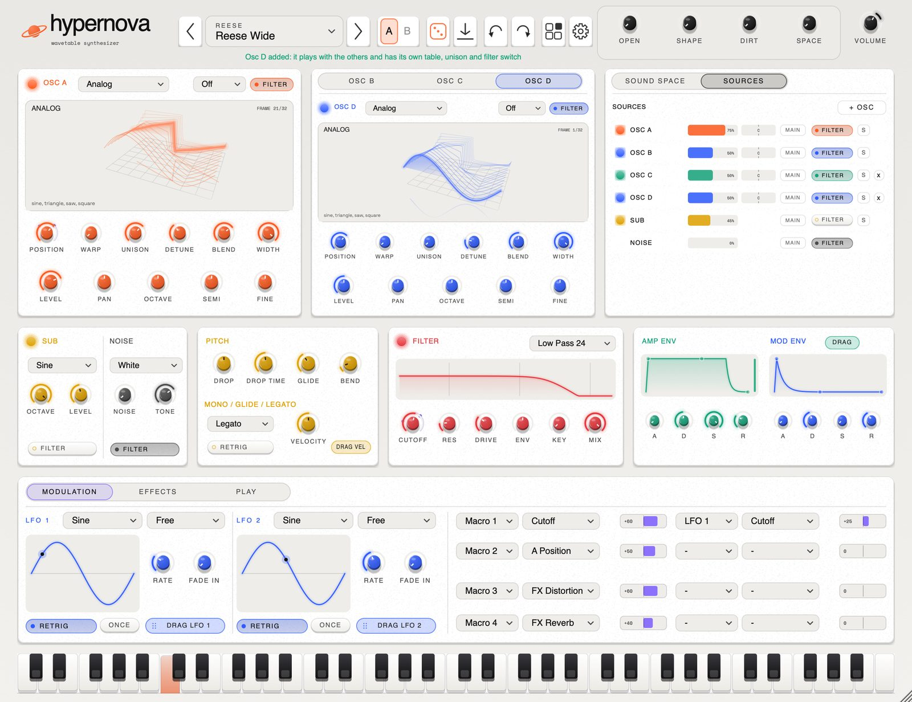

hypernova.
a wavetable synthesizer for macOS.
up to eight oscillators, a sampler, 419 sounds, sixteen effects.
arrange it however you work.
VST3 / AU / STANDALONE · APPLE SILICON + INTEL · MACOS 10.13+ · FREE

play it here.
a small piece of hypernova in your browser. drag the table to spin it, move POSITION to morph through its 32 frames, and play with your keyboard (a to k) or the keys below. headphones help.
it does bass properly.
808s that decay like 808s. amapiano log drums rebuilt from the FL Studio DX10 patch, parameter for parameter. subs, reeses and growls that keep their low end when you push them. then keys, plucks, pads, stabs, a forty-sound experimental bank, club studies (uk garage, dub, house, baile funk and strange percussion), and a proper set of donks for bounce and hard house.
drop a recording anywhere and it plays in the sampler, trimmed and in tune. drop a WAV on an oscillator and it becomes a wavetable. drag an LFO onto a knob and it moves; drag the ring to set how far. press + OSC for another oscillator. click b to try an idea and a to hear where you started. the rest is where you'd expect it.
specs.
sound
- UP TO 8 WAVETABLE OSCILLATORS, 7-VOICE UNISON
- SOURCES MIXER: LEVEL, PAN, FILTER ROUTE
- SAMPLER: DROP, TRIM, LOOP, REVERSE, AUTO-TUNED ROOT
- 15 BUILT-IN TABLES × 32 FRAMES
- IMPORT YOUR OWN WAVETABLES FROM WAV
- WARPS: SYNC, BEND, MIRROR, PWM, CRUSH, FM
- CROSS MOD: FM BOTH WAYS, RING, AM, FILTER FM
- SUB OSCILLATOR, 8 NOISE TYPES
- 8 FILTERS INCL. COMB AND FORMANT
- UP TO 4× OVERSAMPLING, ONLY WHERE IT HELPS
movement
- 2 ENVELOPES WITH DRAG HANDLES
- 2 LFOS, TEMPO SYNC, FADE IN
- 8-SLOT MOD MATRIX, 4 MACROS
- DRAG A SOURCE ONTO ANY KNOB
- LIVE MODULATION RINGS, DRAG THEM FOR DEPTH
- ARPEGGIATOR, CHORD MEMORY, STRUM
- MONO, LEGATO AND GLIDE
- XY PAD, LIVE MOD MONITOR
- ORBIT: MORPH BETWEEN FOUR CAPTURED SOUNDS
- CHOP: SLICE A SAMPLE ACROSS THE KEYBOARD
- RESAMPLE THE SOUND INTO THE SAMPLER
effects
- DISTORTION, 6 TYPES, 4× OVERSAMPLED
- OTT, CHORUS (3 MODES), FLANGER
- TAPE WEAR: WOW, FLUTTER, HISS, CRACKLE
- TRANCE GATE, AUTO PAN, SWEPT FILTER
- DELAY: DIGITAL, REVERSE, GRANULAR
- REVERB: SPACE, PLATE, SPRING, ROOM
- PITCH SHIFTER, 5-BAND EQ, CRUSH, WIDTH, MONO BASS
- SPEAKER: PHONE, LAPTOP, CAR, BOOMBOX, CLUB
- TWO BUSES: EVERY SOURCE AND EFFECT PICKS ONE
- EVERY EFFECT A MODULE WITH A LIVE 3D DISPLAY
- DRAG THEM INTO ANY ORDER, SAVE CHAINS
- MODULATE ANY EFFECT CONTROL
- LOW END: CLEAN SUB UNDER THE EFFECTS, TEMPO DUCK
everything else
- 419 FACTORY SOUNDS + 22 FOUNDERS PACK
- SHARE SOUNDS AS .HNPRESET FILES
- A / B COMPARE, UNDO FOR EVERYTHING
- DOCKING WIDGETS, SAVED WORKSPACES
- SCOPE, LUFS METER, PINBOARD
- 5 THEMES, CUSTOM ACCENT COLOUR
- UPDATES ITSELF, IF YOU LET IT
- SLEEPS WHEN SILENT: ~0 % CPU
- SIGNED AND NOTARIZED BY APPLE
- INSTALLER AND UNINSTALLER INCLUDED
your layout.
every panel is a widget. grab one by its name and drop it anywhere: in the middle of another to make tabs, beside it to split. drag the gaps to resize, double-click a title to fill the window. add a scope, a loudness meter, an XY pad, a live mod monitor or a pinboard of your own knobs from the widget library, and save the lot as a workspace. panels spring into place and can be caught mid-move. none of it touches the sound.





five looks.
paper is the default. the rest are in the gear menu, or pick your own accent colour and ignore all five.


sound packs.
free. download a zip, drag it onto hypernova. the sounds turn up in the browser under the pack's name.
loading packs…
install.
- 01
open the disk image.
- 02
double-click install hypernova. on macOS 10.13 to 11, use install hypernova.pkg in everything else.
- 03
in Ableton: settings › plug-ins › rescan. it's under arrow › hypernova.
new versions install over old ones and keep your sounds. the uninstaller asks before it deletes anything.
changelog.
loading releases…